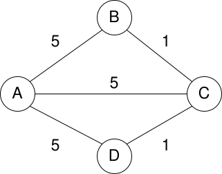
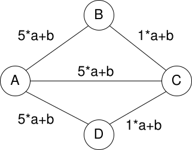

Partie 7 | Révisions
Partie 7: Révisions#
Plan du TP:
20 premières minutes: lecture et réponse aux QCMs individuellement
20 minutes suivantes: correction collective des QCMs. Le groupe vérifie que les réponses de chacun sont toutes les mêmes, et tente de trouver la bonne si ce n’est pas le cas (+ justification et explication pour ceux qui se trompaient).
Pendant les 1h20 restantes, tentez de faire, en groupe, les deux questions INGInious, séquentiellement (travaillez tous en même temps sur la même question). Ouvrez à chaque fois un partage d’écran sur Teams, et partagez IntelliJ. La personne qui partage IntelliJ devrait être différente à chaque fois, et devrait idéalement être à chaque fois un membre de votre groupe qui se sent moins à l’aise avec la matière. Le but est que cette personne résolve le problème et que le reste du groupe l’aide.
QCM 1 (janvier 2020)#
Etant donné un texte ne contenant que la lettre a répété un million de fois (\(10^6\)) et encodé en ASCII étendu (un byte par caractère). Supposez maintenant que ce texte est compressé en appliquant deux fois l’algorithme de compression de Huffman successivement.
input --compress--> output1 --compress--> output2
\-----------> tree1 \-----------> tree2
Les arbres (tree1/2) ne sont pas comptés dans la taille des sorties (output1/2).
Cochez les affirmations correctes. \(size(x)\) donne la longueur en bit de x. Par exemple, \(size(input)=8\cdot 10^6\)
\(\Large{\frac{\text{size}(output\mathbf{1})}{\text{size}(input)}\simeq \frac{1}{8}}\)
\(\Large{\frac{size(output\mathbf{1})}{size(input)}\simeq \frac{1}{2}}\)
\(\Large{\frac{size(output\mathbf{2})}{size(input)}\simeq \frac{1}{64}}\)
\(\Large{\frac{size(output\mathbf{2})}{size(input)}\simeq \frac{1}{16}}\)
\(\Large{\frac{size(output\mathbf{2})}{size(input)}\simeq \frac{1}{8}}\)
QCM 2 (janvier 2020)#
L’en-tête d’un fichier compressé par l’algorithme de compression de Huffman contient une version sérialisée de l’arbre utilisé pour la compression. Cette sérialisation est effectuée en utilisant un parcours préfixe de l’arbre, tel que vu au cours.
Etant donné qu’un arbre contient \(n\) noeuds, quelle est la complexité temporelle (la plus précise, le cas échéant) de reconstruire l’arbre (chainé) à partir du parcours avec la méthode readTrie() ?
private static Node readTrie() {
boolean isLeaf = BinaryStdIn.readBoolean();
if (isLeaf) {
// constructor is (letter, leftNode, rightNode)
return new Node(BinaryStdIn.readChar(), null, null);
}
else {
return new Node('\0', readTrie(), readTrie());
}
}
\(\mathcal{O}(n)\)
\(\mathcal{O}(n \log n)\)
\(\mathcal{O}(\log n)\)
\(\mathcal{O}(n^2)\)
Aucune de ces réponses (\(\mathcal{O}(f(n))\) où \(f(n)\) est asymptotiquement plus grand que \(n^2\))
QCM 3 (janvier 2020)#
Etant donné un tableau de fréquence avec \(n\) entrées, quelle est la complexité temporelle (la plus précise, le cas échéant) pour construire l’arbre de Huffman au départ du tableau de fréquences avec buildTrie ?
// build the Huffman trie given frequencies
private static Node buildTrie(int[] freq) {
// initialze priority queue with singleton trees
MinPQ<Node> pq = new MinPQ<Node>();
for (char c = 0; c < R; c++)
if (freq[c] > 0)
pq.insert(new Node(c, freq[c], null, null));
// merge two smallest trees
while (pq.size() > 1) {
Node left = pq.delMin();
Node right = pq.delMin();
Node parent = new Node('\0', left.freq + right.freq, left, right);
pq.insert(parent);
}
return pq.delMin();
}
\(\mathcal{O}(log(n))\)
\(\mathcal{O}(n)\)
\(\mathcal{O}(n.log(n))\)
\(\mathcal{O}(n^2)\)
Aucune de ces réponses (\(\mathcal{O}(f(n))\) où \(f(n)\) est asymptotiquement plus grand que \(n^2\))
Note
Notez que dans notre infinie bonté, on vous donne ici l’algorithme… vous n’avez donc qu’à le regarder et à donner la complexité. C’est quelque chose qu’on fait… parfois. D’autres fois, on ne vous le donnera pas; la méthode est donc à ce moment soit de connaitre la réponse par coeur (mauvaise idée sauf pour quelques algorithmes spécifiques, dont la complexité n’est pas évidente à la lecture) soit d’abord de réécrire l’algorithme et de regarder sa complexité.
QCM 4 (janvier 2020)#
Répondez par vrai ou faux. Tout les mots sont importants!
La cotation de cette question est \(20\cdot\max(0, 2(\frac{x}{n}-0.5))\) où \(x\) est le nombre de case correctement cochées (une case est correctement cochée si l’affirmation est fausse et qu’elle n’est pas cochée ou si elle est cochée et que l’affirmation est vraie) et où \(n\) est le nombre d’affirmations. Répondre au hasard vous vaudra donc \(0\) en moyenne!
Exemple#
Pour vous aider, voilà un exemple de graphe. Il sera probablement utile.
{kind=link}

Transformation linéaire#
Quand on parle de « transformation linéaire » ci-dessous, nous entendons appliquer la formule \(a*w+b\) sur le poids \(w\) de chaque arête du graphe. Par exemple:
{kind=link}

Avec \(a > 0\) et \(b \geq 0\).
L’algorithme de Dijkstra permet de trouver le chemin le plus court dans tout graphe, y compris avec des poids négatifs, mais pas dans ceux qui ont des cycles de poids négatif.
En supposant un graphe connexe au départ, lors de son exécution, un invariant de l’algorithme de Prim est que les edges selectionnées forment un graphe connexe.
L’algorithme de Dijkstra génère, pendant son calcul du chemin le plus court sur un graphe connexe pondéré positivement, un arbre sous-tendant du graphe. Chaque chemin partant de la racine et allant vers n’importe quel noeud est le (== un des) chemins les plus courts de la racine vers cette feuille. Hint: raisonnez sur l’exemple ci-dessus. Cela pourrait vous aider.
L’algorithme de Dijkstra génère, pendant son calcul du chemin le plus court sur un graphe connexe pondéré positivement, un arbre sous-tendant du graphe. Cet arbre est un minimum spanning tree. Hint: raisonnez sur l’exemple ci-dessus. Cela pourrait vous aider.
L’algorithme de Dijkstra permet de trouver le chemin le plus court dans tout graphe, y compris avec des poids négatifs.
Soit un graphe G, connexe, non-dirigé, et pondéré (positivement). On effectue une opération linéaire (de coefficient \(a\) strictement positif et biais \(b\) positif, voir exemple ci-dessus) sur le poids des arêtes. L’ensemble des MSTs de ce nouveau graphe est le même que celui du graphe original.
Soit un graphe G, connexe, non-dirigé, et pondéré (positivement). On effectue une opération linéaire (de coefficient \(a\) strictement positif et biais \(b\) positif, voir exemple ci-dessus) sur le poids des arêtes. Les chemins les plus courts trouvés par l’algorithme de Bellman-Ford sont les mêmes que ceux du graphe original. (Considérez par simplicité que dans le graphe original il y a au plus un chemin le plus court entre toute paire de noeud)
QCM 5 (janvier 2020)#
Cochez les affirmations correctes.
Dans les questions ci-dessous:
Les heaps sont toujours formées de telle sorte qu’elles donnent le plus petit élément en premier. Autrement dit, ce sont des min-heaps.
Quand on parle de « tableau d’un arbre complet » il s’agit de l’encodage d’arbre sous forme de tableau vu au cours. Le tableau commence à l’indice 1, cet indice représantant la racine de l’arbre. Les deux noeuds fils d’un noeud \(i\) sont \(2i\) et \(2i+1\).
Les arbres sont complets
Tout les mots sont importants!
La cotation de cette question est \(\max(0, 2(\frac{x}{n}-0.5))\) où \(x\) est le nombre de case correctement cochées (une case est correctement cochée si l’affirmation est fausse et qu’elle n’est pas cochée ou si elle est cochée et que l’affirmation est vraie) et où \(n\) est le nombre d’affirmations. Répondre au hasard vous vaudra donc \(0\) en moyenne!
Il est nécessaire et suffisant que « pour tout chemin allant de la racine vers une feuille du heap, les noeuds soient (non-strictement) croissants » pour qu’un arbre soit un heap (donnant le plus petit élément en premier).
Il est nécessaire et suffisant que « pour chaque noeud, ses deux enfants soient plus grands que lui » pour qu’un arbre soit un heap (donnant le plus petit élément en premier).
Le tableau d’une heap binaire complet est (non-strictement) croissant.
Un arbre binaire complet dont le tableau est croissant forme un heap.
Etant donné un heap binaire complet de \(n>10\) noeuds, retirer le minimum et le remettre (pop puis push) laisse le heap (le tableau) inchangé.
Il existe un algorithme en \(\Theta(n)\) pour former un heap correct à partir d’un tableau d’éléments non trié.